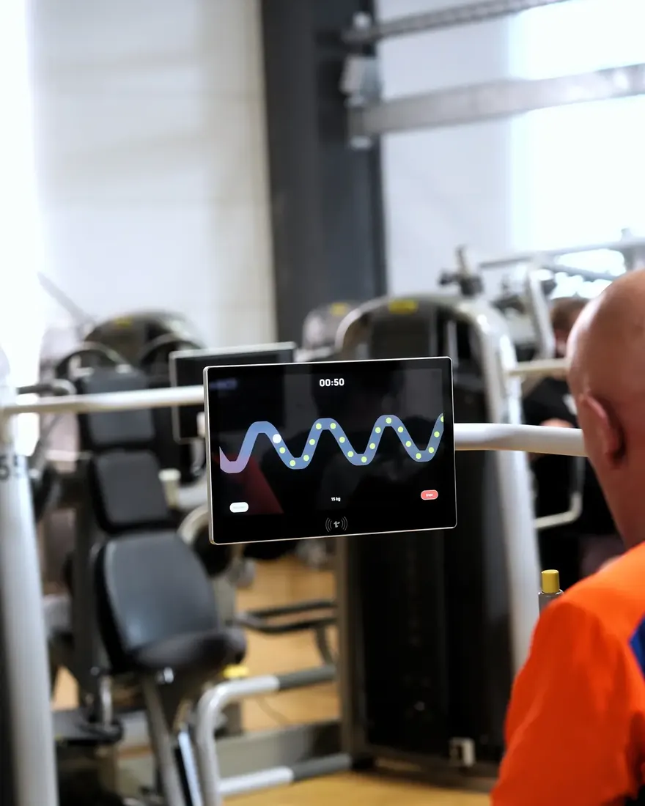
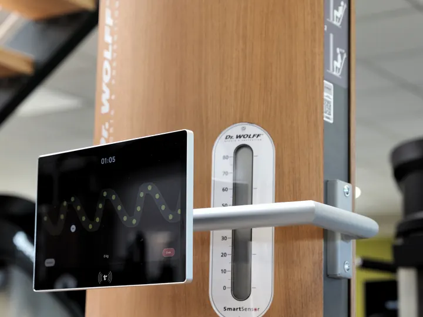
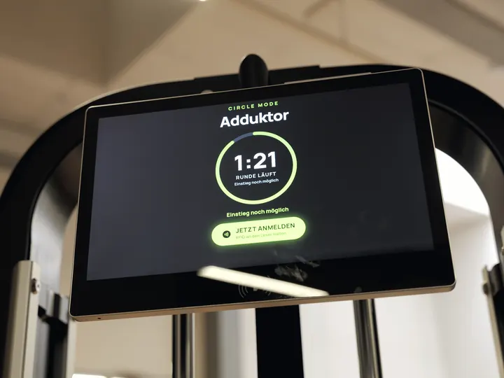
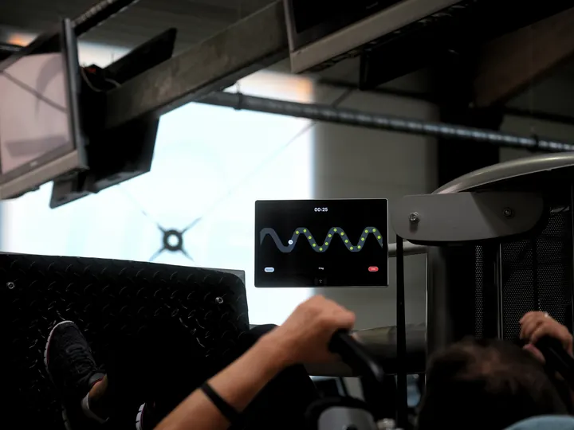
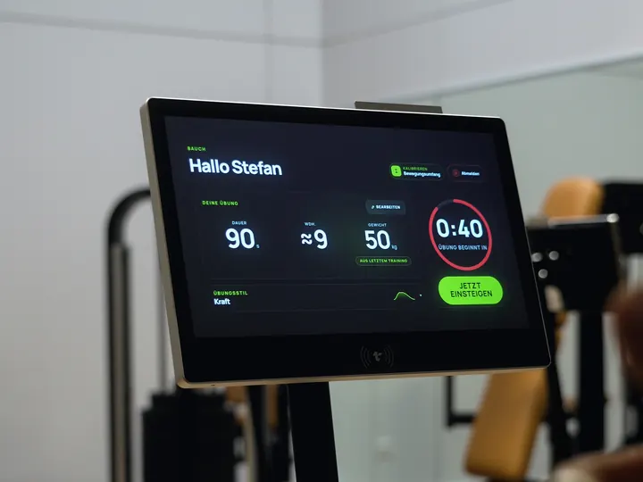
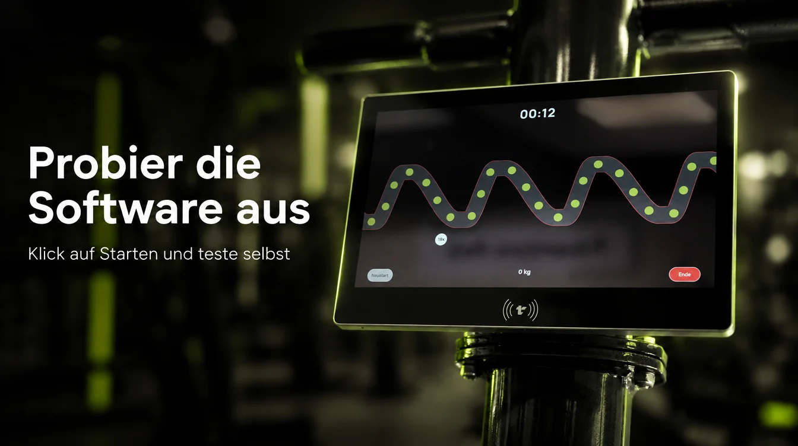
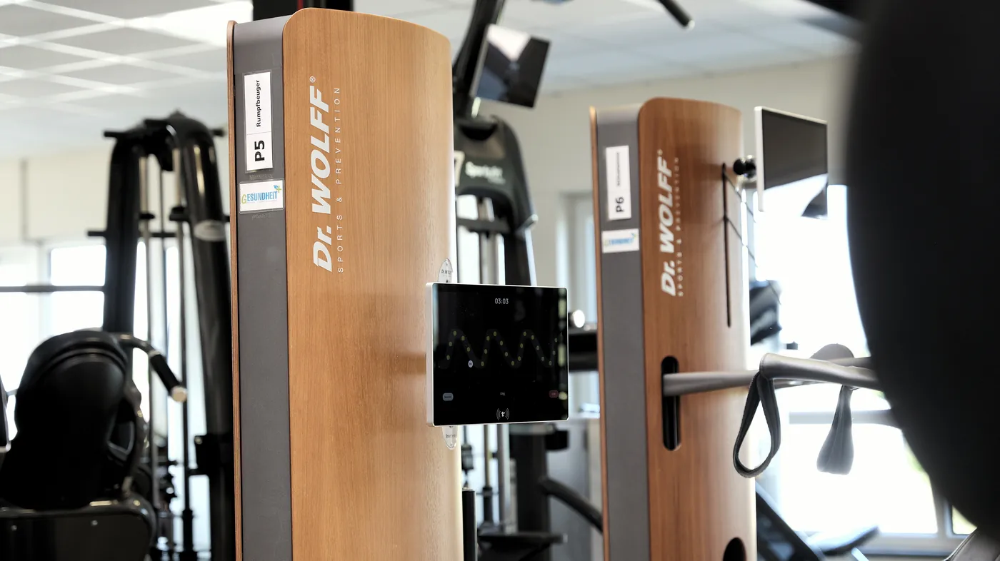

Digitalisiere deinen Gerätepark. Geführtes Training für alle. Unabhängig vom Personalmangel.
Trackbar rüstet deine Kraftgeräte mit Display und Sensor nach. Deine Mitglieder trainieren geführt, dein Team gewinnt Zeit für echte Betreuung.
Im Einsatz bei aquaFit, FUNatic Fitness, LIFE fit & vital, Fitness Nöllen und vielen weiteren Partner-StudiosIn 60 Sekunden: so arbeitet Trackbar in deinem Studio.
Warum Betreiber auf Trackbar setzen
Die neue Lösung für den Fachkräftemangel in der Fitnessbranche
Gute Trainer sind schwer zu finden, die Fläche muss trotzdem betreut sein. Trackbar führt am Gerät durch jede Übung, auch wenn gerade niemand danebensteht.
Schnelle Trainingserfolge, die deine Mitglieder motivieren
Plan per Armband, Live-Kurve bei jeder Wiederholung, Auswertung nach dem Satz. Deine Mitglieder sehen ihren Fortschritt direkt am Gerät.
Digitale Steuerung für bestehenden und neuen Gerätepark
Sensor und Display kommen an deine Kraftgeräte, unabhängig vom Hersteller und ohne Gerätewechsel. Neue Geräte lassen sich genauso ausstatten.
Nachrüstbar an allen Geräten von
- Life Fitness
- Matrix
- Technogym
- Gym80
- MedX
- Precor
- Hammer Strength
- Nautilus
- Panatta
- und viele mehr
Angebunden an
Vertriebspartner
Für welchen Bereich interessierst du dich?
Wähl deinen Bereich. Die Seite baut sich danach passend für dich neu auf.
Mehr Betreuung auf der Fläche, ohne mehr Personal.

Was Trackbar auf deiner Fläche verändert.
Inhaber erzählen, wie es bei ihnen läuft
So funktioniert es
Vom Nachrüsten bis zur Auswertung: vier Schritte, die an deinen vorhandenen Geräten laufen.
-

Sensor und Display kommen an dein vorhandenes Gerät
Der Sensor sitzt am Gewichtsblock, das Display an einem Arm direkt am Gerät. Das passt an Kraftgeräte mit Steckgewichten von Life Fitness, Matrix, Technogym, Gym80 und vielen weiteren Herstellern.
- Kein Gerätewechsel, keine zusätzliche Fläche
- Installation mit möglichst geringer Ausfallzeit
-

Armband an den Lesepunkt, der Plan ist da
Wer trainiert, meldet sich per RFID-Armband direkt am Gerät an. Übung, Gewicht und Einstellung stehen sofort auf dem Display. Die Pläne kommen aus deinem bestehenden System.
- Keine zusätzliche App
- Kein Zettel, kein Papierkram
-

Die Live-Kurve führt durch jede Wiederholung
Das Display zeigt die Bewegung in Echtzeit und gibt bei jeder Wiederholung Feedback. Gewicht und Wiederholungen schreibt das Gerät automatisch mit, nach dem Satz steht die Auswertung da.
- Geführtes Training, auch wenn kein Trainer danebensteht
- Sichtbarer Fortschritt dank der Trackbar-Kurve
-

Jede Einheit landet bei deinem Team
Trackbar überträgt die Trainingsdaten in Echtzeit an EGYM und Actinate. Darüber sind etwa Magicline, Aidoo und CenterCom angebunden. Dein Team sieht, wie sich jemand entwickelt, und kann gezielt betreuen.
- Zusammenfassungen in EGYM oder der Actinate Studio-App
- Zahlen vom letzten Training direkt am Gerät
Probier die Software aus

So wirst du Partner
Ob du Trackbar ins eigene Angebot aufnimmst oder einzelne Abschlüsse vermittelst: Der Weg ist kurz, die Konditionen werden individuell vereinbart.
- KennenlernenSortiment, Märkte und Kunden, und welches Modell zu dir passt.
- PilotEine Installation bei einem deiner Kunden, gemeinsam geplant.
- VereinbarungReseller-Modell oder Vermittlung mit Beteiligung am Abschluss.
